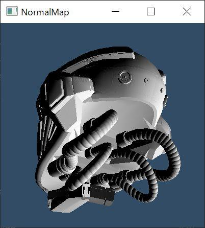

法線マップやってみる

glTFViewerの実装がてら法線マップの実装をやってみる。
OpenGL 4.0 Shading Language Cookbook を参考に進めた。
法線mapとTangentを供給する
https://github.com/KhronosGroup/glTF-Sample-Models/tree/master/2.0/DamagedHelmet をサンプルモデルとした。
glActiveTexture がうまくいかず難航する。
以下のようにして、無理やり解決。
#version 400 #extension GL_ARB_shading_language_420pack : enable layout(binding = 0) uniform sampler2D Tex0; layout(binding = 1) uniform sampler2D Tex1;
すべての sampler2D が 0 にバインディングされる挙動だった。
#version 420 はうまくいかなかったので断念。
エラーは出ないが、何もレンダリングされなくなった。
Tangent が格納されていないので生成する
https://github.com/KhronosGroup/glTF/tree/master/specification/2.0 に以下のよう書いてある。
Implementation note: When tangents are not specified, client implementations should calculate tangents using default MikkTSpace algorithms. For best results, the mesh triangles should also be processed using default MikkTSpace algorithms.
https://github.com/mmikk/MikkTSpace
さくっと dll を作成して、 luajit から呼びだしてみた。
indices POSITION NORMAL TEXCOORD0 を入力して TANGENT を出力する。
わりと適当で動く luajit ffi 恐るべし。
さすがに C の方に呼びだし回数を減らすラッパーを作ったほうが速そうだが、動かすだけなら問題なし。
Shader
OpenGL 4.0 Shading Language Cookbook の phong shading を省略して法線だけ確認。
2倍して1引く を補った。
#version 400 uniform mat4 MVP; uniform mat4 ModelViewMatrix; uniform mat3 NormalMatrix; uniform vec3 LightDirection; layout(location = 0) in vec3 VertexPosition; layout(location = 1) in vec3 VertexNormal; layout(location = 2) in vec2 VertexTexCoord; layout(location = 3) in vec4 VertexTangent; out vec3 LightDir; out vec3 ViewDir; out vec2 TexCoord; out vec3 Debug; void main() { vec3 normal = normalize(NormalMatrix * VertexNormal); vec3 tangent = normalize(NormalMatrix * vec3(VertexTangent)); vec3 binormal = normalize(cross(normal, tangent)) * VertexTangent.w; mat3 toObjectLocal = mat3(tangent.x, binormal.x, normal.x, tangent.y, binormal.y, normal.y, tangent.z, binormal.z, normal.z); vec3 pos = vec3(ModelViewMatrix * vec4(VertexPosition, 1.0)); LightDir = normalize(toObjectLocal * LightDirection); ViewDir = toObjectLocal * normalize(-pos); TexCoord = VertexTexCoord; Debug = vec3(VertexTangent); gl_Position = MVP * vec4(VertexPosition, 1.0); };
#version 400 #extension GL_ARB_shading_language_420pack : enable layout(binding = 0) uniform sampler2D Tex0; layout(binding = 1) uniform sampler2D Tex1; in vec3 LightDir; in vec3 ViewDir; in vec2 TexCoord; in vec3 Debug; out vec4 FragColor; void main() { vec4 texColor = texture2D(Tex0, TexCoord); vec4 normal = texture2D(Tex1, TexCoord); // FragColor = vec4(Debug, 1); float intensity = max(dot(LightDir, (normal.xyz * 2 - 1)), 0); vec3 color = vec3(intensity); FragColor = vec4(color, 1); };
glTF の シェーダー では、 mat3 を fragment shader に送りこんでいた。
https://github.com/bwasty/gltf-viewer/tree/master/src/shaders
tangent space でライティングするという概念は同じらしい。